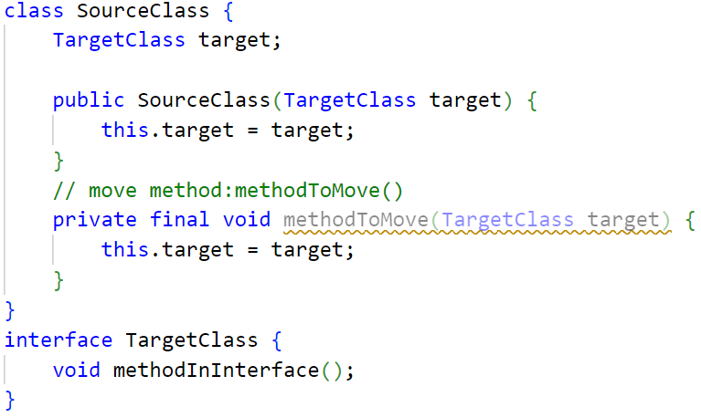
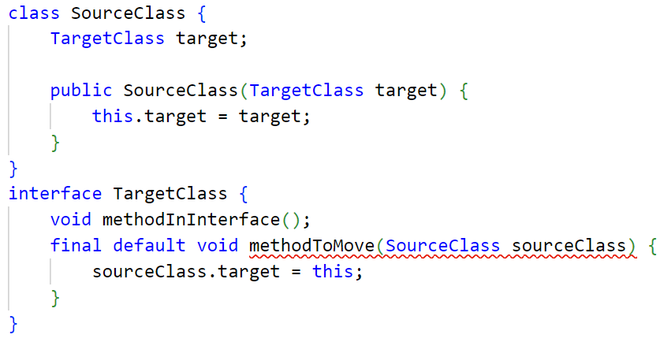

Bugs of Move Method Refactoring --IDEA
Last
Next
Home
Bug List
1
5
2
6
3
7
4
Code before refactoring

Code after refactoring

Expected results
A warning must be issued, refactoring is not supported. Please ensure to fully understand the code context and potential impacts before attempting similar refactoring steps.